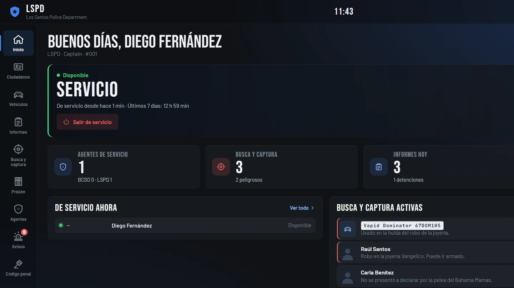

Tu policía, lista para servicio
Tablet policial a pantalla completa, radio con frecuencias y grupos, y una interfaz gratis para tu servidor. Todo con el mismo diseño, en español y en inglés.



GF Police
Todo lo que la policía necesita en una tablet: fichas, informes, multas, avisos con mapa en vivo, prisión en calabozos y depósito de vehículos. Cada cuerpo con su color y su logo.

Ciudadanos y vehículos
Foto, licencias, notas, multas, antecedentes, busca y captura e historial del depósito.
Informes y multas
Agentes, implicados y delitos del código penal, que se edita desde la tablet. Los ciudadanos pagan con /multas.
Unidades y avisos
Entrar y salir de servicio, estados, unidades y horas. /911 y /entorno con panel en pantalla.
Menú de acciones
Esposar, escoltar, meter en el coche, cachear, foto de ficha y mandar al depósito.
Calabozos de comisaría
Metes al detenido, cierras la puerta y aplicas la condena desde el informe. Al cumplirla sale a la puerta.
LSPD, BCSO y los tuyos
Color, logo, cuenta de la empresa y permisos por rango para cada cuerpo.


Sin sacar la tablet
Con la F7 el agente hace lo de cada día en un menú con el mismo diseño. Los avisos en pantalla también siguen el estilo de la tablet.
- Esposar y quitar esposas, con objeto opcional
- Escoltar, meter y sacar del vehículo
- Cachear con ox_inventory o qb-inventory
- Depósito: el dueño lo recupera en el de su script de garajes
ESX / QBCore / Qboxox_liboxmysqlOneSync
ox_inventory (recomendado)ox_doorlock para los calabozos
GF Radio
Radio para todo el servidor. Frecuencias de trabajo, grupos que crean los propios jugadores y frecuencias públicas, con teclas que cada uno cambia desde la radio.

- Cada trabajo ve solo sus canales: fijos arriba y el resto por columnas
- Grupos con 5 frecuencias propias e invitaciones por cercanía o ID
- Hablar por tu frecuencia o a todo tu grupo a la vez
- Teclas, volumen, silencio, modo streamer y animaciones
- Sonido propio: un pitido limpio, sin interferencias

Con GF Police: canales solo de servicio, indicativos y la radio dentro de la tablet.
ESX / QBCore / Qboxox_liboxmysqlpma-voice
objeto radio (opcional)
Elige tu script
GF Police
- Tablet policial completa
- Menú F7, prisión y depósito
- Actualizaciones incluidas
Pack Police + Radio
- GF Police y GF Radio
- La radio sale dentro de la tablet
- Los canales siguen el servicio de cada agente
GF Radio
- Frecuencias de trabajo y públicas
- Grupos de jugadores
- Actualizaciones incluidas
Precios con impuestos según tu país, calculados por Tebex al pagar. Antes de comprar, lee los términos y reembolsos.
GF UI gratis
Avisos, barra de progreso y texto de ayuda con el diseño de GF Scripts. Para ESX, QBCore y ox_lib, sin compilar nada. Código abierto (MIT).


- Sustituye los avisos, la barra y el texto de ESX copiando tres carpetas
- En QBCore cambia la barra de progreso y, con una función, los avisos
- Opcional: unas líneas en ox_lib para que todo el servidor tenga el mismo estilo
- Color, posiciones, duración y sonido en el
config.lua - Código abierto: el diseño está en CSS normal
La tienda abre muy pronto. Únete a nuestro Discord para enterarte el primero. Mientras tanto puedes descargar GF UI gratis.
Compra seguraCómo se compra
Compras en la tienda
El pago lo gestiona Tebex, la tienda oficial de los scripts de FiveM.
Te llega a Cfx.re
El script aparece en portal.cfx.re, en Assets → Granted Assets, con la cuenta con la que compraste.
Lo copias
Descargas la carpeta, la pones en resources y añades ensure en el server.cfg.
A patrullar
Las tablas de la base de datos se crean solas. Ajustas el config.lua y listo.
Preguntas frecuentes
¿Funciona en QBCore y Qbox?
Sí. GF Police y GF Radio detectan solos si el servidor usa ESX Legacy, QBCore o Qbox. También funcionan con ox_inventory o qb-inventory, y con otros inventarios a través del framework.
¿En qué idiomas están?
En español e inglés. Se elige en el server.cfg con setr ox:locale es o en. Los textos están en archivos abiertos, así que puedes añadir tu idioma.
¿Puedo cambiar cosas del script?
Sí. La configuración, los textos, el código de compatibilidad con cada framework, inventario y banco, y el estilo de los avisos vienen abiertos. Solo va protegida la parte principal, con el sistema oficial de Cfx.re.
¿Las actualizaciones se pagan?
No. Cuando sale una versión nueva la descargas otra vez desde portal.cfx.re, con la misma cuenta.
¿En qué servidores funciona?
En los servidores cuya clave (license key) sea de la misma cuenta de Cfx.re con la que compraste.
¿Hace falta ox_doorlock para la prisión?
No es obligatorio, pero es lo que recomendamos: el agente mete al detenido en el calabozo, cierra la puerta con ox_doorlock y aplica la condena desde el informe.
¿Puedo pedir un reembolso?
Lo explicamos en los términos y reembolsos. Si algo no funciona, escríbenos primero en Discord: casi siempre tiene arreglo.
¿Cómo pido ayuda?
En nuestro Discord, en el canal de soporte para clientes. Ten a mano el ID de la compra de Tebex y lo que salga en rojo en la consola.